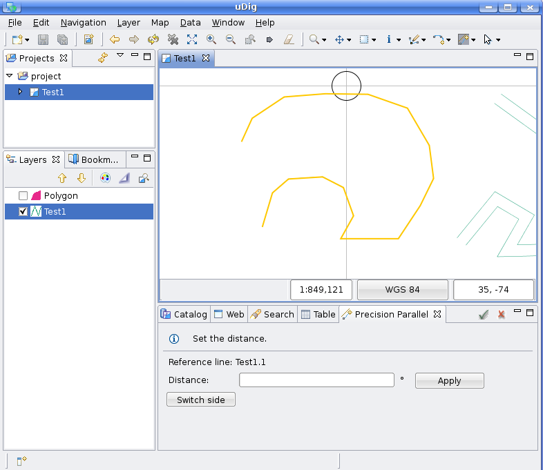

Parallel Tool¶
 Creates a parallel LineString.
Creates a parallel LineString.
The Parallel Tool works by selecting a reference line and setting the distance, then will draw a parallel line. The distance will be set when a click on the map is done. After that it calculates the distance between this point and the nearest segment of the reference line.
How to use the Parallel tool:¶
- Select the Parallel Tool from the feature tool category in the tool bar.
You can use the keyboard short cut C to cycle through the available feature tools
Select a reference line.
- Set the distance by clicking on the map near the line.
Doing this also set if the parallel line will be draw outside the feature or inside.
Once a preview is drawn, the distance can be changed using the view, and also if the parallel goes inside the feature or outside them.
Usage example¶
Select the Parallel Tool from the drop down buttons list as shown in Figure 1.

Figure 1. Selecting the Parallel Tool.
Select the reference feature.

Figure 2. Selecting the reference feature.
Once the reference feature is selected, set the distance by clicking near a segment. Doing this, the tool find the nearest segment and calculate the distance and also if the parallel line will be outside the reference feature or inside the reference feature. When this is done, the parallel will be draw as shown in Figure 3.

Figure 3. Setting the distance and drawing the parallel line.
When the parallel line has been drawn, the user can change the distance between the reference feature and the parallel line, for doing this, set a new distance on the text box and click on Apply button.

Figure 4. Change the distance.
If the user wants to change the position of the parallel line(inside or outside the reference feature) need to click on the switch side button.

Figure 5. Switching the side.
When the user finished setting the parallel line and wants to add it to the layer, he can do by double-clicking on the map or by clicking on the Accept button situated on the tool bar of the view. Also if he wants to discard the change and start over again with other reference feature, he can click on the Cancel button situated near the Accept button.

Figure 6. Add the parallel line to the layer.